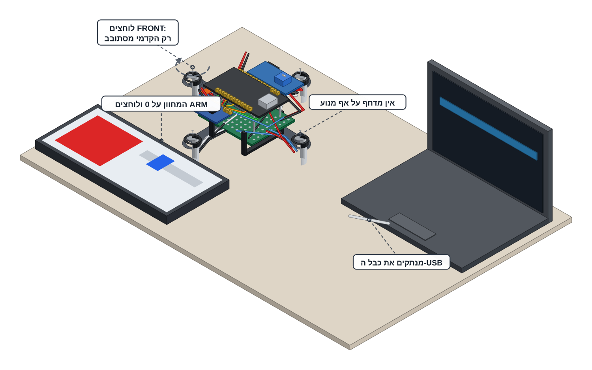

שתי אבני דרך על כרטיסייה אחת: מעלים את הקוד ב-USB ואז מסובבים ארבעה מנועים מהטלפון — בלי מדחפים.
אין מדחף על אף מנוע. בודקים במגע לפני שמחברים סוללה. המדחפים סגורים בשתי הקופסאות שעל שולחן המורה — הם תמיד האחרונים שנכנסים והראשונים שיוצאים.
משקפי מגן לכל מי שנמצא בחדר, שיער אסוף ושרוולים מופשלים — מהשלב הזה והלאה מנוע יכול להסתובב.
STOP היא מילה שכל אחד בחדר יכול להגיד. כשהיא נאמרת: המחוון יורד ל-0, לוחצים DISARM והידיים של כולם נעצרות. המורה מחליט מה קורה אחר כך.
מנוע שמסתובב מעצמו — מושכים מיד את תקע הסוללה. בלי מדחפים זה מותר לכל תלמיד, כי אין מדחף שיפגע ביד. עם מדחפים הכלל הפוך: לא נוגעים ברחפן בכלל — לוחצים DISARM, הידיים נשארות במקום עד שכל המדחפים עצרו ורק אז המורה מנתק את הסוללה.
הסוללה בידי המורה לאורך כל הכרטיסייה: הוא מוציא אחת בשביל חלק ב׳ ולוקח אותה בחזרה בסופו.
חלק א׳ נעשה על ה-USB בלבד, כשהסוללה מנותקת ואצל המורה. חלק ב׳ נעשה על הסוללה בלבד, כשכבל ה-USB בחוץ. כל עוד הסוללה בחוץ שום דבר לא מזין את BAT+ בלוח המוספטים והמנועים לא יכולים לזוז — גם אם הקוד מנסה.

הסוללה אצל המורה. מחברים את ה-USB ומכוונים בתפריט Tools שלוש הגדרות:
בפרויקטים 5 ו-6 בחרתם ESP32 Dev Module. הרחפן הוא לוח אחר — בוחרים את השם המדויק. מהירות נמוכה יותר בהעלאה = פחות ניסיונות שנכשלים עם כבלים זולים.
במנהל הספריות מתקינים Adafruit MPU6050 — כשנפתחת השאלה על ספריות נוספות לוחצים Install all. בודקים שליד Adafruit Unified Sensor כתוב INSTALLED.אותו טקס כמו הספריות של פרויקט 6. שתי הספריות שייכות ל-MPU6050 — החיישן שמרגיש לאן זה למטה — ומשמשות את קוד התעופה בכרטיסיות הבאות.
מעתיקים את 00_motor_test.ino מתיקיית המורה לתיקיית פרויקט 8 שלכם ופותחים אותו. קוראים את הכותרת בראש הקובץ — היא אומרת מה הקוד עושה ושהוא רץ בלי מדחפים.מספר העמדה (STATION) כבר מוגדר בקובץ על ידי המורה ולכן רשת הרחפן תיקרא DRONE-01 עד DRONE-08 לפי המספר שלכם — אותו שם שכתוב על מדבקת הרחפן.
מעלים ומחכים לשורה Hard resetting via RTS pin... אחר כך פותחים את הצג הטורי במהירות 115200, קוראים את הכותרת שהקוד מדפיס ומשווים את שם הרשת שבצג לשם שעל מדבקת הרחפן — הם חייבים להיות זהים.
תקוע על Connecting...? מחזיקים את כפתור ה-BOOT עד שהנקודות זזות. רושמים את שם הרשת בשדה שלמטה; הסיסמה נמצאת על כרטיס העמדה ולא נרשמת כאן. ביום טיסה ההעלאות עוצרות בזמן שרחפן פעיל בקו הטיסה — גם רחפן שמחובר ב-USB משדר רשת.
כך נראה הצג הטורי אחרי ההעלאה:
===== PROJECT 8 - MOTOR TEST (props OFF!) ===== Throttle ceiling: 100 % = 255 / 255 Motor pins: FRONT 25 RIGHT 26 BACK 14 LEFT 27 Network: DRONE-01 Password: ... Page: http://192.168.4.1 Ready - DISARMED. Slider on 0, then ARM.
מעתיקים מהשורה Network: שבצג הטורי. אצלכם מופיע מספר העמדה שלכם — לא בהכרח DRONE-01.
עוברים באצבע על ארבעת המנועים ומוודאים: אין מדחף על אף אחד מהם. מנתקים את כבל ה-USB. משקפי מגן לכל מי שנמצא בחדר.
הרחפן שוכב שטוח על השולחן והידיים בצד. בלי מדחפים אין הרמה ולכן אין מה להחזיק.
המורה מוסר סוללה אחת ומחברים אותה בזמן שהוא מסתכל על המנועים. הנורה האדומה על הבקר נדלקת ואף מנוע לא זז.רעד של פחות מעשירית שנייה במנוע האחורי ברגע החיבור הוא תקין. מנוע שממשיך להסתובב — מושכים את התקע.
בטלפון מתחברים לרשת DRONE-xx — השם שרשמתם למעלה — ופותחים בדפדפן 192.168.4.1.
הסיסמה על כרטיס העמדה; מקלידים פעם אחת והטלפון זוכר. אם הטלפון מתלונן "אין חיבור לאינטרנט" — נשארים מחוברים. משאירים את הדף מלפנים כל הזמן: אם המסך נכבה או שעוברים לאפליקציה אחרת, הרחפן יוצא ממצב חמוש תוך פחות משנייה.
המחוון על 0, לוחצים ARM — הפס האפור הופך לירוק וכתוב בו חמוש · ARMED, הנורה הכחולה דולקת קבוע. לוחצים FRONT: המנוע הקדמי — ורק הוא — מסתובב 2 שניות בעוצמה נמוכה קבועה (כ-25%) ונעצר לבד. אחר כך RIGHT, BACK ו-LEFT. מסמנים ✓ לכל מנוע בטבלה שלמטה.
השורה עוצמה למנועים בדף מראה את עוצמת הבדיקה (64 מתוך 255) במשך 2 השניות וקופצת בחזרה ל-0 — תקין, לא תקלה. לחיצה שנייה בזמן שהבדיקה רצה לא עושה כלום ולחיצה על DISARM עוצרת אותה מיד. כפתור שמסובב זרוע אחרת מהשם שלו = שני חוטי שער שהתחלפו על פיני הבקר.
מזיזים את המחוון (מ-0% עד 100%) לאט ומקשיבים:
המנועים עולים לאט — כחצי שנייה מ-0 עד המלא — ויורדים מיד. הצליל עולה ויורד יחד עם המחוון.
תרגול: המורה אומר STOP פעם אחת. מאפסים את המחוון ולוחצים DISARM. אחרי כל DISARM הרחפן נשאר למטה עד שהמחוון על 0 ולחיצת ARM חדשה מגיעה — שום דבר לא חוזר להיות חמוש מעצמו.
המורה מנתק את הסוללה ולוקח אותה. נוגעים באצבע במנועים וברכיבי ה-MOSFET: חמימים לכל היותר.
כך נראה דף בדיקת המנועים על מסך הטלפון אחרי לחיצה על ARM:
בדיקת מנוע בודד: 2 שניות ב-25% · רק כשחמוש והמחוון על 0
רשת: DRONE-xx
ארבעת הכפתורים מסודרים על המסך כמו הזרועות במבט מלמעלה: FRONT למעלה, BACK למטה, LEFT משמאל ו-RIGHT מימין. הם עובדים רק כשהדף במצב חמוש וגם המחוון על 0. המונה שליד פס המצב סופר זמן מנועים — מאז החימוש ובסך הכול; בכרטיסיות הטיסה מסתכלים עליו.
מסמנים ✓ אחרי שרואים את המנוע הנכון מסתובב לבדו.
העלאה שעברה, כותרת בצג הטורי עם השם של הרשת שלכם ואחריה ארבעה מנועים שכל אחד מהם עונה לכפתור שלו וכולם עונים למחוון — בלי אף מדחף בחדר.
הצליל עולה ויורד יחד עם המחוון. אצלכם מופיע מספר העמדה שלכם — לא בהכרח DRONE-01.
זה הפרויקט האחד שבו החומרה יכולה לפגוע בכם — המדחפים והסוללה. בגלל זה המורה מחזיק את שניהם, בגלל זה חובשים משקפי מגן בכל רגע שמנוע יכול להסתובב, בגלל זה הרחפן תמיד על חוט ובגלל זה כל אחד רשאי להגיד STOP. כל הכללים בכרטיסיית R1.